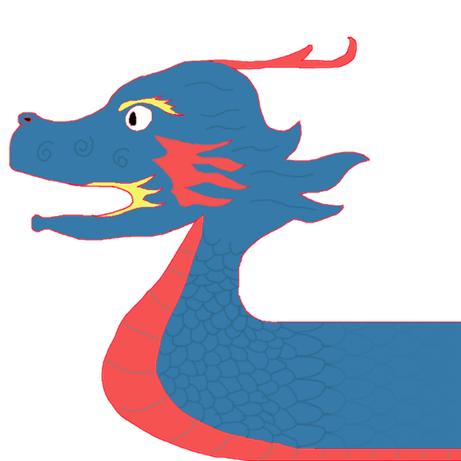
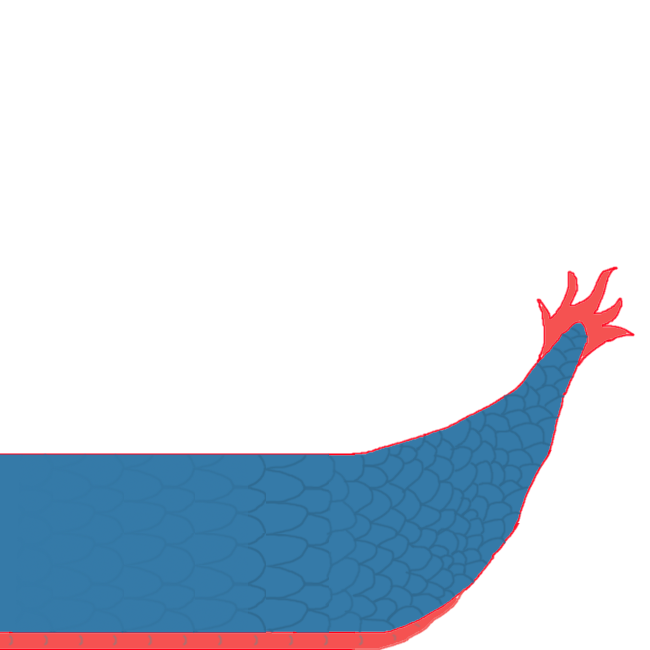

ENG1 Team 11 project
|  |  |
As a team, we have opted to follow an agile development methodology, specifically using a cross of the Scrum and Kanban frameworks. The Agile methodology is an evolution of incremental development, a method involving breaking down a problem into many smaller steps, and takes it a step further by encouraging adaptive planning and flexibility in development.
The Scrum framework is designed for smaller teams, making it perfect for us. Goals are broken down into iterations which should take a short amount of time, and are completed within a set amount of time known as a sprint. By using small sprints and defining small goals development can easily react to changes in requirements or specifications, as well as being easier on the team since there are no massive goals to tackle. We have modified the Scrum framework slightly, reducing the length of a sprint to one week to represent the complexity of the project.
Kanban is a method to manage workloads by splitting the workload into smaller tasks that anybody can complete. It allows for a more visual representation of what work needs to be completed, what is in progress, and what has been finished, using a Kanban board. These boards are designed based on the context of development and may range from a simple todo, in progress, completed board to boards that also have stories, restrictions, and other more complex features. Any developer can take a job from the todo section of the list and commence work on it, moving it through any intermediate stages before it is finally completed.
One of our primary tools in development is Git, a distributed version-control system. Git allows for multiple programmers to work on the same project by creating branches, putting their changes to the code into those branches, then merging them back into the main branch. Additionally, branches can be created for any size of change so are ideal for Scrum where changes are very small. Changes can be committed to the repository in 30 seconds and, provided that the same code hasn’t changed in the master branch, merged just as easily. Additionally, if some code changes need to be undone Git allows the user to simply reset to an earlier version of the code, uniquely identified by a hash value.
Other tools exist that fulfill a similar purpose, such as Apache Subversion or Mercurial, both version control tools. Whilst equally feature complete, providing branches and full versioning, Git was chosen as it is the most familiar tool to members of the team and most commonplace. Additionally, if another version control software was selected, we would have to use a different repository hosting website as GitHub, for example, only supports Git repositories.
GitHub is another tool we are using in our development process. GitHub is a website that provides repository hosting for Git, changing the commit cycle such that you can also push your commits to the server, where they can be shared with other developers. Other developers can then fetch the remote branches and do their own work on them. GitHub additionally provides tools such as Continuous Integration through GitHub Actions and project management through GitHub Projects.
Github Projects is a kanban board-style todo list allowing for the creation of boards and cards to go on those boards, which all developers can then access and modify. This is ideal for our chosen development methodology as it allows for tasks to be broken down into smaller parts and put on a board where anyone can pick tasks, develop them, then move the task to the “completed” board. Although lacking in some management features and formatting, it is good enough for our purposes, which is using it in a Scrum-style workflow. Other options include websites such as Trello, which is similar to Projects but with more features such as colour coding and labelling, however we don’t need the additional features and having everything in one place is far more convenient.
There are many alternatives to GitHub, providing the git repository hosting service. One such alternative is BitBucket, which provides an almost identical interface, as well as integration with Trello and Jira to provide features similar to GitHub projects. In the end, we chose GitHub as it is the most widely used repository hosting service in the world, and has all the features that we need.
Additionally, as we need to create documentation for our entire source, we will be using Javadoc to generate HTML documentation files which we can easily transfer to our project website. Javadoc reads through Java source files and generates documentation based on the method names and Javadoc-style comments that accompany them. Other solutions include Doxygen or Sphinx however these tools are primarily for C++ and Python respectively, where Javadoc is designed specifically for use with Java.
Google Drive is a cloud-based storage that provides 15GB or storage for free and also comes with a suite of office tools including Docs (word processor), Sheets (alternative to MS Excel) and Slides (alternative to MS PowerPoint). One of the main advantages of Google Drive is the ability to share documents and make edits in real-time, providing an easy way to collaborate within the team. There are many alternatives to Google Docs such as Dropbox, OneDrive and Sync. However, Google Drive is the most common choice and also most familiar to all members of the team.
Discord is a voice and text communication platform targeted mostly at the gaming community. It provides multiple useful features such as the ability to create a private server and channels for different uses within it. In our example, we have a channel for design and risk ideas, where team members can post and discuss their ideas and decisions. Discord allows sharing media files and the screen and is easy to use. Other communication platforms exist, such as Zoom, which we also use for our weekly meetings as a project requirement, or Slack. However, most of the members are most comfortable with using Discord.
For creating diagrams we chose to use PlantUML - an open-source tool that allows users to create UML diagrams from a plain text language - and Lucidchart which is a web-based platform allowing users to collaborate on drawing, revising and sharing charts and diagrams. Both tools are relatively easy to use and access which is the main advantage over other alternatives.
Roles and responsibilities:
Approach to team organization:
We tried to divide responsibilities evenly between all members of the team and let everyone contribute to the project. We mostly focused on 1-2 deliverables at a time, using the Assessment brief to identify all the relevant information and details that must be included in each deliverable. Since we chose Scrum as our development framework, all tasks were done in small, week-long sprints. During the sprint, responsible team members worked on their specific tasks, while others gathered information relevant to the project. After each sprint we had a weekly meeting where we discussed what has been done and what is yet to be completed as well as assigned new tasks.
Additionally, we had our own Discord server where members could ask questions or discuss their tasks anytime. It allowed each member of the team to have a clear understanding of the progress, decisions, project schedule and be able to share their own ideas.
Whenever any important decisions or changes to the project plan were made, we went back to the completed deliverables and made edits in order to ensure that all deliverables are up to date.
This method is appropriate for our team and the project as it is perfect for small teams and provides everyone with an opportunity to contribute and stay informed about all decisions made within the team. In addition, it allows a certain degree of flexibility, as the whole project is divided into small tasks that can be done by any member of the team in case if someone is sick or unwilling to participate. Additionally, our method allows us to react to changes and make new decisions without complications.
You can see our Gantt Chart here >> or download .xlsx file here >> or view .pdf file with the Critical Path here >>
Start dates of some tasks were shifted and the overall progress of the project was delayed due to poor communication between the team members, illnesses and inactivity of some members. As a result, we started working on the implementation much later than planned. However, most of the deliverables were completed on time.
We originally planned to present our product requirements in tabular form. In the end, we decided to write them in a structured natural language format in order to present requirements, associated with them risks and alternatives in a clear and understandable way. It caused a bit of a delay and a difficulty moving on to other sections.
You can see our Weekly snapshots here >>
View as a pdf file >>